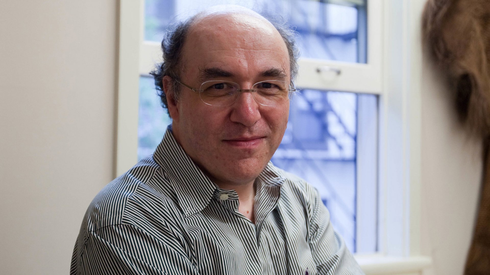

Stephen Wolfram
Stephen Wofram es un físico britanico-estadounidense nacido en Londres, Inglaterra el 29 de Agosto de 1959. Estudió física en el Tecnológico de California (Caltech) donde también se doctoró en física de partículas. A pesar de su formación física, Wolfram se acerco al mundo de los autómatas celulares, el desarrollo computacional y las ciencias de la complejidad.
Las áreas de investigación que actualmente desarrolla son las siguientes:
Donde algunos de sus trabajos e investigaciones más notables son:
- La regla 30 de los autómatas celulares
- Wolfram's Physics Project
- Ruliología
Y entre sus obras más destacadas tenemos:
- Statical mechanics of celular automata : Artículo base de los autómatas celulares como sistema matemático. Además en este trabajo propone lo que ahora se conoce como la clasificación de Wolfram para autómatas celulares donde divide en cuatro clases el comportiento de estos.
- A new kind of science : Es su libro más famoso y controversial pues en el establece que las matemáticas tradicionales no son suficientes para explicar problemas de sistemas complejos. También en él propone que los fenómenos deben estudiarse a través de métodos computacionales.
- Software Mathematica : Es un software de cálculo simbólico que resuelve ecuaciones algebraicas, derivadas e integrales.
- Lenguaje de programación Wolfram language : Es un lenguaje de alto nivel y multi-paradigma sobre el cual se basa Mathematica. Está diseñado para trabajar computación simbólica, computación funcional y programación basada en reglas.

Sobre Wolfram's Physics Project
El proyecto de física de Wolfram es un programa que busca encontrar la "teoría del todo" de la física, es decir, una
teoría que explique toda la física en la que propone que el universo está formado por una red discreta, la cual llama
hipergrafo, y que es de naturaleza computacional en lugar de usar ecuaciones como normalmente se hace.
Wolfram establece que un hipergrafo es el universo y que el espacio, el tiempo y la materia son elementos que
emergen de su estructura y evolución mediante reglas simples.
Es bien sabido que el problema de la unificación de la física se da entre la mecánica cuántica y la teoría de la
relatividad general, pero Wolfram menciona que eso no debería ser un problema en su enfoque pues
propone que estás nacen gracias a las propiedades emergentes de invariancia causal y de los sistemas multiway.
La invarianza causal la define como una propiedad del hipergrafo donde no importa el orden en que se apliquen
las reglas de evolución, el resultado será la misma estrutura causal para todos las posibilidades. Gracias a esta
propiedad explica el nacimineto de la relatividad general.
Y los sistemas multiway nacen justo de todos los posibles caminos para llegar a un mismo estado, por lo que menciona
que esta evolución no es líneal. Y debido a esta ramificación, de caminos multiples para llegar a un mismo estado, se
tiene el origen de los fenómenos cuánticos, según Wolfram.
Comentarios finales
Sin duda alguna, el proyecto de Wolfram es demasiado ambicioso pues pretende cambiar la forma de entender la física y esto es posible gracias a, algo que puede considerarse como un arma de doble filo, su forma de trabajar y publicar resultados pues desde hace años abandonó la manera tradicional de hacer ciencia (publicar en revistas revisadas por pares) y comenzó a publicar en páginas propias. Al trabajar de esta manera, tiene la libertad de escribir lo que sea sin ser rechazado ni tener límitantes sin embargo, el problema es que al no tener un "contrapeso" que lo examine, es complicado tener confiabilidad en sus posturas y resultados. Por otra parte, el hecho de que establezca que la naturaleza del universo sea matemática es una afirmación muy fuerte pues esta mezclando conceptos abstractos como las matemáticas con objetos reales como los que pretende estudiar la física, por lo que considero importante analizar con cautela su proyecto y sus ideas.
Referencias
- Stephen Wolfram (2020), "Finally We May Have a Path to the Fundamental Theory of Physics… and It's Beautiful," Stephen Wolfram Writings. writings.stephenwolfram.com/2020/04/finally-we-may-have-a-path-to-the-fundamental-theory-of-physics-and-its-beautiful.
- TED. (2010, abril 27). Stephen Wolfram: comutandio hacía una teoría de todo. YouTube. https://www.youtube.com/watch?v=60P7717-XOQ
- Stephen Wolfram (s.f.) About Stephen Wolfram Stephen Wolfram. https://www.stephenwolfram.com/about/